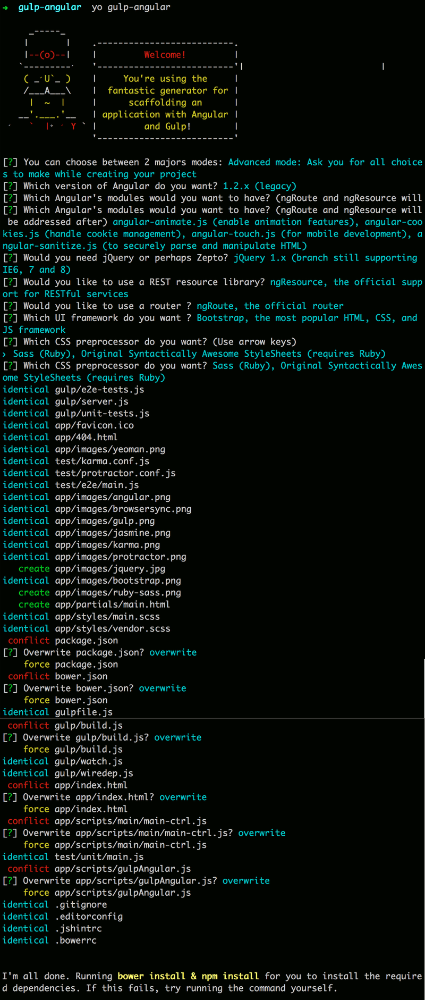
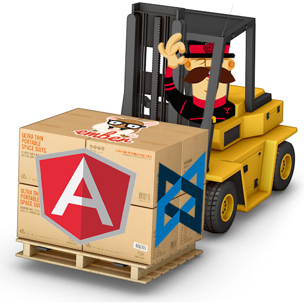
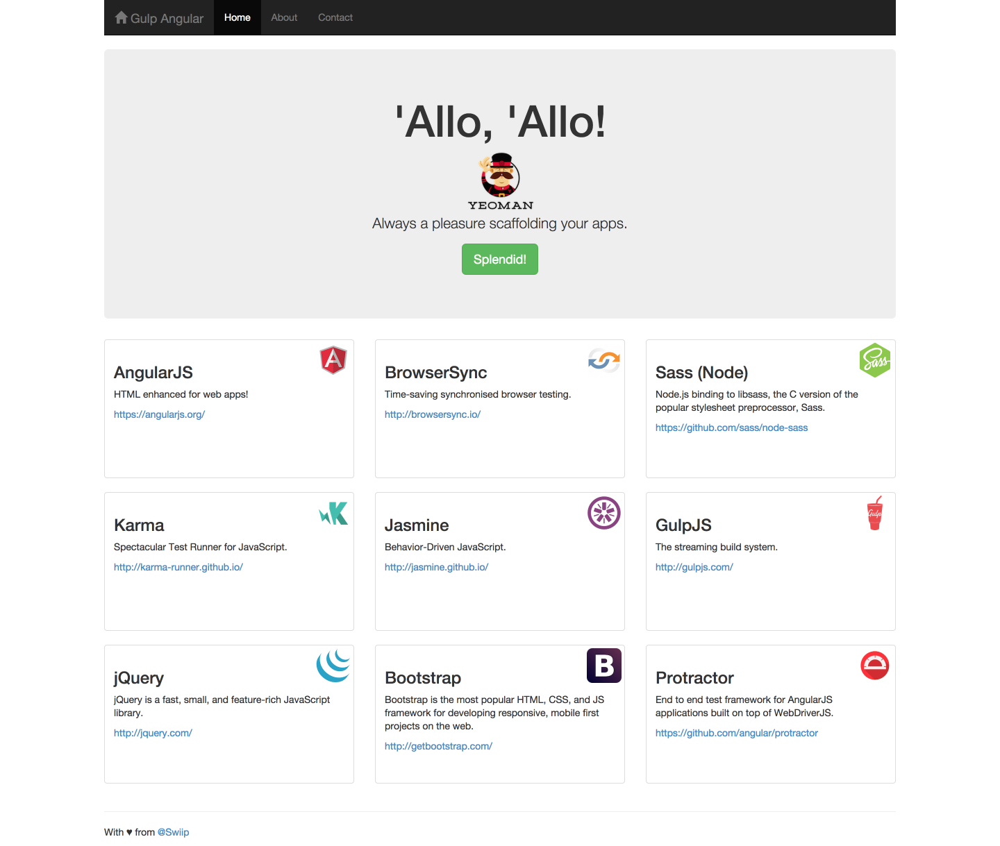

Fluidifiez votre industrialisation Web avec

Matthieu Lux


+Michael Daniel! (et bien d'autres)
What's Yeoman?
A tool


A workflow

Lots of generators
Speed. Efficiency. Simplicity.
gulp's use of streams and code-over-configuration makes for a simpler and more intuitive build.
var gulp = require('gulp');
var coffee = require('gulp-coffee');
var concat = require('gulp-concat');
var uglify = require('gulp-uglify');
var imagemin = require('gulp-imagemin');
var sourcemaps = require('gulp-sourcemaps');
var del = require('del');
var paths = {
scripts: ['client/js/**/*.coffee', '!client/external/**/*.coffee'],
images: 'client/img/**/*'
};
// Not all tasks need to use streams
// A gulpfile is just another node program and you can use all packages available on npm
gulp.task('clean', function(cb) {
// You can use multiple globbing patterns as you would with `gulp.src`
del(['build'], cb);
});
gulp.task('scripts', ['clean'], function() {
// Minify and copy all JavaScript (except vendor scripts)
// with sourcemaps all the way down
return gulp.src(paths.scripts)
.pipe(sourcemaps.init())
.pipe(coffee())
.pipe(uglify())
.pipe(concat('all.min.js'))
.pipe(sourcemaps.write())
.pipe(gulp.dest('build/js'));
});
// Copy all static images
gulp.task('images', ['clean'], function() {
return gulp.src(paths.images)
// Pass in options to the task
.pipe(imagemin({optimizationLevel: 5}))
.pipe(gulp.dest('build/img'));
});
// Rerun the task when a file changes
gulp.task('watch', function() {
gulp.watch(paths.scripts, ['scripts']);
gulp.watch(paths.images, ['images']);
});
// The default task (called when you run `gulp` from cli)
gulp.task('default', ['watch', 'scripts', 'images']);
API
- gulp.src(globs[, options])
- gulp.dest(path[, options])
- gulp.task(name[, deps], fn)
- gulp.watch(glob [, opts], tasks)
gulp.watch(glob [, opts, cb])

Optimization
gulp-useref
- Tags on the html file
- Concatenate files
- Pass them in the gulp stream
- Give a filter to match them
- Modify the index.html
<html>
<head>
<!-- build:css css/combined.css -->
<link href="css/one.css" rel="stylesheet">
<link href="css/two.css" rel="stylesheet">
<!-- endbuild -->
</head>
<body>
<!-- build:js scripts/combined.js -->
<script type="text/javascript" src="scripts/one.js"></script>
<script type="text/javascript" src="scripts/two.js"></script>
<!-- endbuild -->
</body>
</html>
var gulp = require('gulp'),
useref = require('gulp-useref'),
gulpif = require('gulp-if'),
uglify = require('gulp-uglify'),
minifyCss = require('gulp-minify-css');
gulp.task('html', function () {
var assets = useref.assets();
return gulp.src('app/*.html')
.pipe(assets)
.pipe(gulpif('*.js', uglify()))
.pipe(gulpif('*.css', minifyCss()))
.pipe(assets.restore())
.pipe(useref())
.pipe(gulp.dest('dist'));
});
<html>
<head>
<link rel="stylesheet" href="css/combined.css"/>
</head>
<body>
<script src="scripts/combined.js"></script>
</body>
</html>
gulp-rev, gulp-rev-replace
- Rename files with an hashcode
- Rewrite occurences of filenames in HTML
gulp-minifyHtml gulp-ngHtml2js gulp-inject
- Optimize HTML templates
- Convert in scripts
- Inject scripts in the HTML
Also...
- gulp-ngAnnotate for angular injections
- gulp-csso for CSS optimization
- gulp-imagemin for image optimization
Development workflow
Dev server and backend?
- Cross-origin resource sharing (CORS) :/
- BrowserSync + Proxy!
Also...
- Preprocessors: sass, coffee, jade...
- Sourcemaps
- gulp.watch
Tests
Unit tests
gulp.task('test', function() {
var bowerDeps = wiredep({
directory: 'app/bower_components',
exclude: ['bootstrap-sass-official'],
dependencies: true,
devDependencies: true
});
var testFiles = bowerDeps.js.concat([
'app/scripts/**/*.js',
'test/unit/**/*.js'
]);
return gulp.src(testFiles)
.pipe($.karma({
configFile: 'test/karma.conf.js',
action: 'run'
}))
.on('error', function(err) {
// Make sure failed tests cause gulp to exit non-zero
throw err;
});
});
Protractor
gulp.task('protractor-only', ['webdriver-update', 'wiredep'], function (done) {
var testFiles = [
'test/e2e/**/*.js'
];
gulp.src(testFiles)
.pipe($.protractor.protractor({
configFile: 'test/protractor.conf.js',
}))
.on('error', function (err) {
// Make sure failed tests cause gulp to exit non-zero
throw err;
})
.on('end', function () {
// Close browser sync server
browserSync.exit();
done();
});
});
gulp.task('protractor', ['serve:e2e', 'protractor-only']);
Generator options
Released
- Angular version: 1.2, 1.3
- jQuery: none, 1.x, 2.x, Zepto
- Angular modules: animate, cookies, touch, sanitize
- Resource handler: ngResource, Restangular, none
- Router: ngRoute, UI Router, none
- UI Framework: Bootstrap, Foundation, none
- CSS pre-processor: Less, Sass with Ruby and Node, none
Wanted
- Bootstrap directives : UI Bootstrap, Angular Strap, none
- JS preprocessor: CoffeeScript, TypeScript, ES6 (Traceur)
- HTML preprocessor: Jade
- Script loader: Require, Browserify, ES6 with Require?, none
- Test framework: Jasmine, Mocha, Qunit
Thanks
https://github.com/Swiip/generator-gulp-angular
https://github.com/Swiip/yeoman-gulp